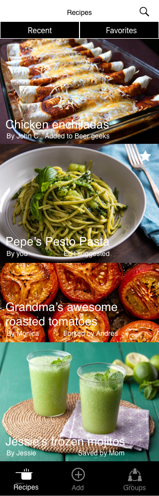
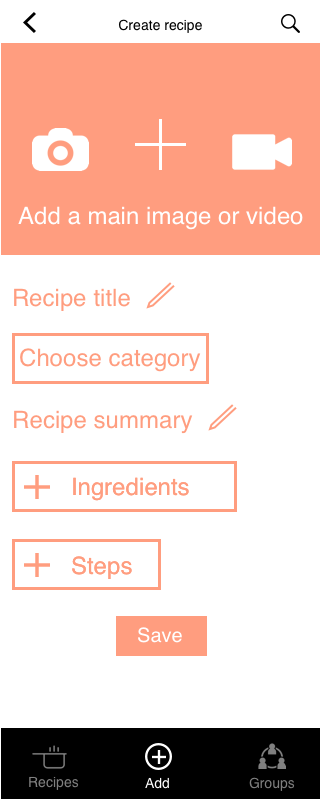
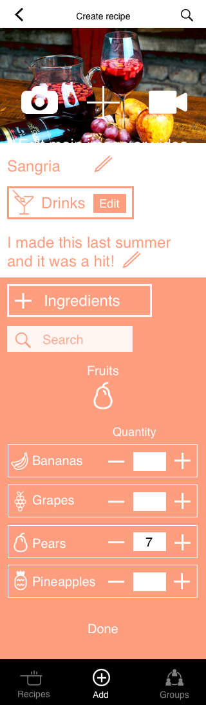
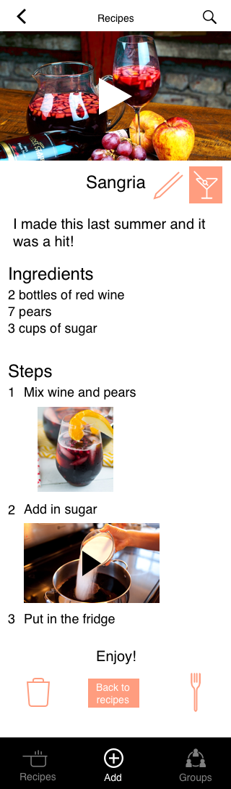
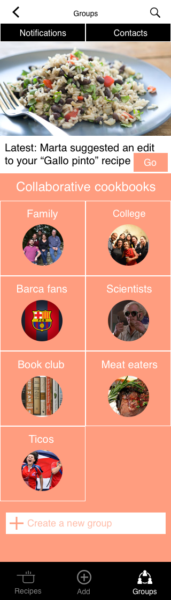
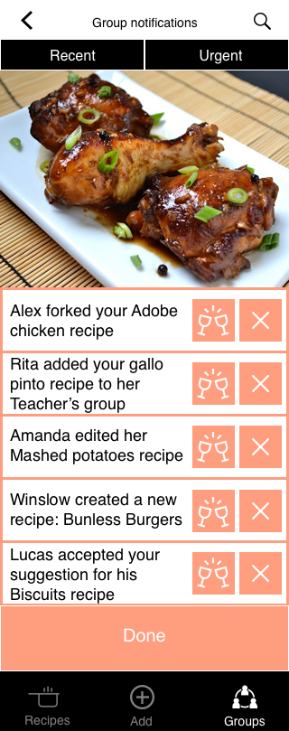
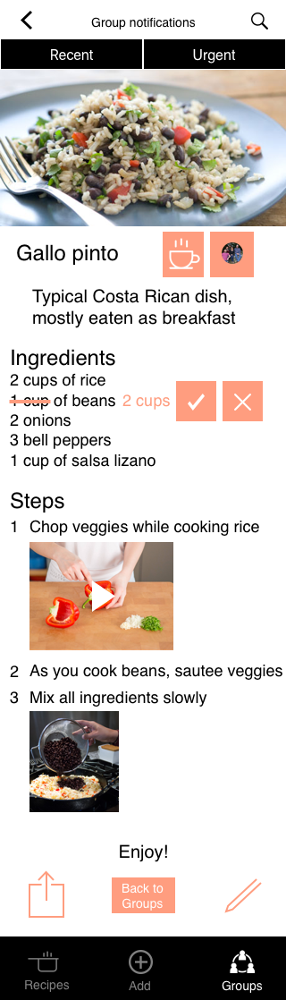
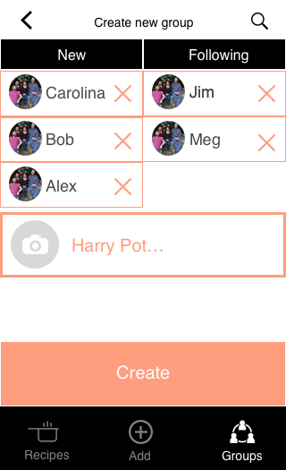
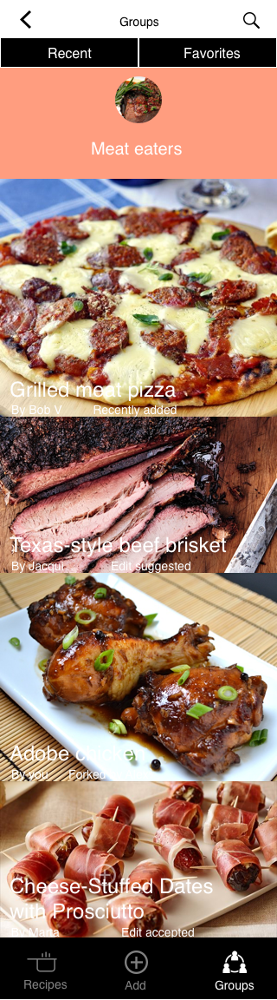

Challenge
The first thing that I thought of when presented with the challenge of designing an app involving food was something close to home. My partner and her family began texting recipes that they should cook for the week based on what one of them had already cooked. They all love food- they share recipes to learn to cook new dishes from each other, but also to feel closer to each other. Cooking brings people together, even virtually! My partner has also written cookbooks for her family members as gifts, so I thought that it would be cool to make this recipe sharing process more effective and immediate.
The Collaborative Cookbook app gives users a simple way to save recipes into a personal digital cookbook. It also lets you share those recipes that you love with your closest friends and relatives so they can cook along with you, or vicariously enjoy what you make. If you want to create particular groups according to topics or tastes, like my partner and her sisters, then you can do so as well. Think of it as a combination of a personalized cookbook mixed with a WhatsApp group and the Google Docs collaborative editing functionality.
The first app map envisioned as its’ main task the process of looking for and creating a recipe. My first instinct was to make something that already existed.
Editing (or what I would later call "Forking", get it?) recipes and creating the collaborative cookbooks became an afterthought in the first iteration. Yet this was the original piece of my idea- where I could meet my original need and construct a unique new app. This became clear in the course of developing and testing the wireframes.
After testing out the wireframes, I found some usability and navigation issues: lack of a back button, duplicate search fields, etc. For the next design sprint, I needed to be better about following the iOS Human Interface Guidelines. The app was also missing some key interactions that I needed to design for the prototype, like the process of creating a group or “forking” a recipe. The other great feedback from user testing was that some tabs on the tab bar were unnecessary, and that I should focus on groups rather than “my recipes”. It’s a collaborative cookbook, after all! Another question that came up was how users would invigorate their cookbooks and get new recipe inspiration if the users just get recipes from those they follow. Similar to other social apps, we needed some way for users to connect with strangers or connected ‘friends of friends’ for new ideas.
The new app map reflects these changes.
How will it look?

The landing page of the app shows recipes based on the most recent activity of groups you belong to and people that you follow.

On the tab bar, you can select ‘create a new recipe’, and it will walk you through an easy step by step process.

For example, here you can see how you would add ingredients to a recipe.

And this is how it would look when you have finished all the steps. This is also the view of when you "Fork" or remix an already existing recipe. You tap on the "Fork" button and go through the process of editing the recipe, which is similar to that of creating the recipe.

You can add a new recipe or share an existing recipe to a group that you belong to. When you are in the "Group" view, you will first see the latest notification from one of your groups.

When you select to see the notifications, you can choose to explore further by "cheering" and acknowledging the notification, or you can ignore it.

If the notification is a suggestion for a change in a recipe you have created, then you can accept or deny the suggestion. This is similar to Google Docs collaborative editing.

You can also create a group, similar how you can create chat groups in WhatsApp.

The group view is similar to the landing page group, but only with recipes and activities corresponding to that specific group.
This design also came with some consistency and navigation issues, as testing once again showed. But overall, users had a better understanding of how the app works after I changed the focus to groups. The “recipe” tab shows all the recipes and activities across all groups and friends you are following. Like in a social network, knowing how the people a user is following interacts with others allows for recipe discovery, while the ability to “fork” (remix) recipes from others facilitates cross pollination of group content.
Apple TV app
I then translated the mobile app for the context of the Apple TV. I was responding to the prompt of: what advantages does Apple TV give you and what challenges does it present? How can each of these two different contexts complement and play of each other?
I focused then on creating live video feeds of a person teaching a recipe that can be projected on the Apple TV’s big screen to make it easier to follow. Because the Apple TV allows for a shared experience, one chef can be the main chef using her or his phone to live stream, while others follow along on their own Apple TV. As they watch, users can also submit questions or add their own images or video for the recipe’s multimedia library. Group creation at its best!
I tried to make the recipe creation process engaging, but user feedback convinced me that using a remote control makes this tricky. It’s better to let each tool do what it does best.
When I began designing this app, I started with the idea of sharing and improving upon each other’s recipes. This idea didn’t change much after multiple iterations, but the focus from recipe to groups made the app more engaging for users. Being able to create with others is better than doing it alone.